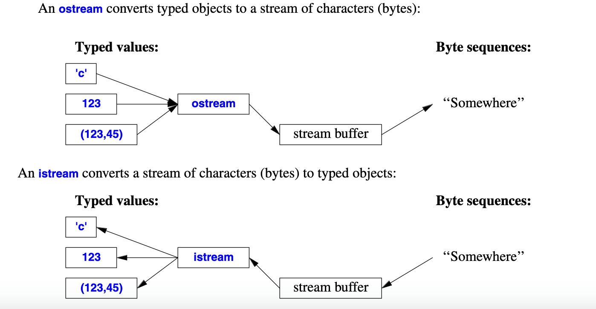

OOP笔记¶
I/O streams¶
istream和ostream的图示

operators¶
The operator << is used as an output operator on objects of type ostream;
The operator >> is used as an input operator determines what input is accepted and what is the target of the input operation;
>>的读入规则¶
若读入类型为integer，则读入终止于非digit字符；若读入string，则终止于空格或回车
也可以用如
getline(cin,str)来读入一整行，并抛弃掉末尾的newline
IO state¶
int i; while(cin >> i);会读入i直到读入失败为止，彼时cin >> i会return false，而且cin.fail()会return true，表明istream无法读取下一个；此时可以通过cin.clear()来重新设置istream的状态
I/O of User-Defined Types¶
例子：
struct Entry {
string name;
int number;
};
ostream& operator<<(ostream& os, const Entry& e)
{
return os << "{\"" << e.name << "\", " << e.number << "}";
}
istream& operator>>(istream& is, Entry& e)
// read { "name" , number } pair. Note: for matted with { " " , and }
{
char c, c2;
if (is>>c && c=='{' && is>>c2 && c2=='"') { // star t with a { "
string name; // the default value of a string is the empty string: ""
while (is.get(c) && c!='"') // anything before a " is part of the name
name+=c;
if (is>>c && c==',') {
int number = 0;
if (is>>number>>c && c=='}') { // read the number and a }
e = {name ,number}; // assign to the entry
return is;
}
}
}
is.state_base::failbit; // register the failure in the stream
return is;
}
Formatting¶
最简单的formatting controls是manipulators，在cout << 1234 << ',' << hex << 1234 << ',' << oct << 1234 << '\n';
// print 1234,4d2,2322
constexpr double d = 123.456;
cout << d << "; " // use the default
<< scientific << d << "; " // use 1.123e2 style
<< hexfloat << d << "; " // use hexadecimal notation
<< fixed << d << "; " // use 123.456 style
<< defaultfloat << d << '\n'; // use the default
// C++ uses rounding instead of truncating
cout.precision(8);
cout << 1234.56789 << ' ' << 1234.56789 << ' ' << 123456 << '\n';
// 1234.5679 1234.5679 123456
cout.precision(4);
cout << 1234.56789 << ' ' << 1234.56789 << ' ' << 123456 << '\n';
// 1235 1235 123456
File stream¶
In <fstream>, the standard library provides streams to and from a file:
+ ifstream for reading from a file
+ ofstream for writing to a file
+ fstream for reading from and writing to a file
ofstream ofs("target"); // ‘‘o’’ for ‘‘output’’
if (!ofs) error("couldn't open 'target' for writing");
fstream ifs; // ‘‘i’’ for ‘‘input’’
if (!ifs) error("couldn't open 'source' for reading");
String stream¶
In <sstream>, the standard library provides streams to and from a string:
+ istringstream for reading from a string
+ ostringstream for writing to a string
+ stringstream for reading from and writing to a string.
...不清楚怎么用yet
The vector¶
用时需要#include <vector>
基本规则和操作¶
vector<class T> amounts;
//vector<type> name;
amounts.empty();
// return true if amounts is empty
amounts.size();
amounts.clear();
// empty amounts
amounts.push_back(const T& elem);
/* append to amounts.
if elem is a direct object instead of a pointer,
makes a deep, independent copy of that object. */
amounts.pop_back();
amounts[2];
// access using operator[]
// iterator
amounts.begin();
amounts.end();
amounts.erase(iterator where);
/* remove element addressed by where
and return an iterator pointing to the elements
after the removed one*/
Changes to a vector invalidate all existing iterators. As a result, previously generated iterators could reference meaningless data.
The map¶
基本规则和操作¶
pair<iterator, bool> insert(const pair<Key, Value>& newEntry);
/* if Key already exists in map, return (an iterator addressing
the pair stored inside the map on behalf of the key, false);
Otherwise return (..., true), and insert the (key, value) pair
into the map;
*/
iterator find(const Key& key);
// ...
Inline functions¶
原理¶
区别于正常函数与主程序分开存放，inline函数在调用时将它的definition，即运行代码贴在调用处。这样就避免了正常函数调用时需要存储返回地址和instruction pointer跳转等操作带来的时间消耗。 但这也同时导致了使用inline函数会是程序更长，属于用大空间换短时间。
适用范围¶
也正是由于这个特性，某些函数不适合用inline： 1. 函数本身的运行时间远大于调用所需时间 因为这样调用节省的时间忽略不计，白白浪费空间 2. 函数并没有被频繁调用 这样就没有发挥出inline的用处
使用方法¶
在声明或定义函数时增加前缀inline即可，如inline double square(double x) { return x * x; }
compiler未必会满足inline的需求；如果该函数太大，或recursive，inline都会被忽略，当作正常函数
Reference¶
- 规则：必须在声明reference变量时初始化，和某变量绑定（成为其别名），不可二次绑定